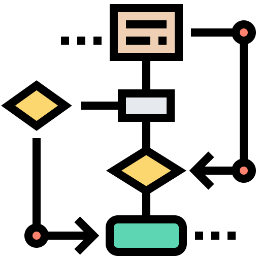
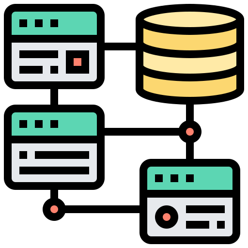

0: Introducció a les Bases de Dades
1. NF1 Introducció a les bases de dades
En aquest apartat veurem conceptes fonamentals del món de les bases de dades, passarem per la història per saber d'on venim a on som ara. També veurem o hem de ser capaços de diferenciar el món real del el món conceptual o de les representacions. Veurem quina a de ser l'estructura que hauria de tenir un Sistema Gestor de Base de dades (DBMS)
2. NF2 Disseny conceptual - model ER/ERE

En aquest apartat treballarem el món de les representacions utilitzant el model Entitat Relació (ER) i el model Entitat Relació Estés (ERE). En veurem la simbologia, nomenclatura així com exercicis per practicar i dominar aquest tipus de diagrames.
3. NF3 Disseny lògic - model relacional

En aquest apartat es veurà de forma formal, però molt sintetitzada, el model relacional creat per en Frank Codd. Ens centrarem a la part més informal i no tan acadèmica. Veurem quins són els passos per transformar un model ER/ERE en un model relacional i finalment es veurà el concepte de Normalització.